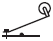
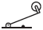
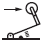
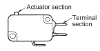
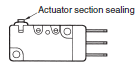
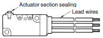

Building Automation
Industrial Automation
Power Automation & Safety


Bangladesh Distributor
Basic Switches
Basic Switches have a micro contact gap and operate at the specified movement and force using a snap-action mechanism. They are available in models with split contacts, maintained operation, drip-proof specifications, high capacity, and DC current specifications.
|
|
Features |
| Principles | Classifications |
| Engineering Data | Further Information |
|
|
|
-
 Basic Switch Actuator Type and Selection Methods
Basic Switch Actuator Type and Selection Methods
-
Selecting PCB Basic Switches
-
PCB Basic Switch Actuator Types and Selection Methods
-
FAQs
Basic Switch Actuator Type and Selection Methods
| Appea- rance | Type | Pre- travel (PT) | Over- travel (OT) | Oper- ating force (OF) | Repeat accuracy | Shock and vibration re- sistance | Description | |
| Pin plunger | Small | Small | Large | ★★ ★★ / ★★★ | ★★★★ | Suitable for short direct strokes, switch characteristics are used directly, and high-precision position detection is possible. The overtravel, however, is the shortest of any actuator, requiring a reliable stopper. | ||
| Slim spring plunger | Small | Medium | Large | ★★ | ★★★ | Overtravel is longer than for a pin plunger, but the same application methods are possible. The plunger diameter is slightly larger, but off-center loads must be avoided, i.e., the load must be on the center of the plunger. | ||
| Short spring plunger | Small | Medium | Large | ★★ | ★★ | Overtravel is large, just as for a slim spring plunger. The plunger is short and has a larger diameter to make alignment easier. | ||
| Panel mount plunger | Small | Large | Large | ★★ | ★★ | The overtravel is the largest of all plunger types. The switch is mounted to a panel using a hexagonal nut and lock nut (mounting position can be adjusted by adjusting the nuts). The plunger can be operated either manually or mechanically, and usage in combination with a low-speed cam is also possible. | ||
| Panel mounted (cross) roller plunger | Small | Large | Large | ★★ | ★ | A roller is attached to a panel mount plunger switch and is operated with a cam or dog. The mounting position can be adjusted the same as a panel mount plunger switch, but the overtravel is slightly smaller. Cross rollers are also available that run arallel to the switch. | ||
| Leaf spring | Medium | Medium | Medium | ★ | ★★ | The stroke is larger because of a strong leaf spring, making this actuator suitable for low-speed cams or cylinder drives. The bearing point is fixed, so the overtravel must be maintained within specifications in the application to prevent damage. | ||
 | Roller leaf spring | Medium | Medium | Medium | ★ | ★★ | A leaf spring actuator with a roller attached. Suitable for cam or dog operation. | |
| Hinge lever | Large | Medium | Small | ★ | ★ | Used with a low-speed, low-torque cam. The shape of the lever can be changed to match the operating body. Steel is mainly used as the material for the lever. | ||
| Simulated roller lever | Large | Medium | Small | ★ | ★ | A hinge lever with the end bent into a curve to enable application as a simple roller. | ||
 | Hinge roller lever | Large | Medium | Small | ★ | ★ | A hinge lever with a roller attached. Suitable for highspeed cam operation. | |
 | One-way action hinge roller lever | Medium | Medium | Medium | ★ | ★ | The actuator can be operated with the operating body moving in one direction. If the operating body comes from the other direction, the roller will bend and operation will fail. It can be use to prevent operation in the wrong direction. | |
| Reverse operation hinge lever | Large | Small | Medium | ★ | ★★★ | Used with a low-speed, low-torque cam, the shape of the lever can be changed to match the operating body. Steel is mainly used as the material for the lever. | Reverse operation is achieved with a coil spring that continuously presses a pushbutton. The pushbutton is pressed in the free state, so high resistance is provided to vibration and shock. (The operating force is larger.) | |
| Reverse operation hinge roller lever | Medium | Medium | Medium | ★ | ★★★ | A reverse operation hinge lever with a roller attached. Suitable for cam operation. | ||
| Reverse operation short hinge roller lever | Small | Medium | Large | ★ | ★★★ | A hinge roller lever that is shorter for reverse operation. The operating force is larger, but it is suitable for cam operation with a short stroke. | ||
| Flexible rod | Large | Large | Small | ★ | ★ | Can be operated in any of 360° except in the direction running along the center of the rod. The operating force is small. Effective for detecting when the direction or shape is not consistent. The overtravel is absorbed by the actuator, providing a large leeway in operating object play. | ||
Note: Indications for repeat accuracy and shock and vibration resistance are as follows: ★: OK, ★★: Good, ★★★: Excellent, ★★★★: Superior
Selecting PCB Basic Switches
Selecting PCB Basic Switches According to Environmental Conditions
Use the Basic Switch with the sealing and grade that are suitable to the dirt, gas, dust, and water droplets conditions.
| Dirt and dust | Gas | Water droplets | Degree of protection | Models | Environmental resistance | Sealing |
| △ | × | × | IP00 | D2A D3C D2X D3D D3DC | Dirt and dust hardly enter the Switch. No protection is provided against gas, water, oil, or other liquids. If there is a possibility that the Switch will be subject to water or other liquid, use a Basic Switch with IP67 protection or use a Limit Switch. |  Dirt and dust hardly enter the Basic Switches by reducing the gaps at the actuator section (the pushbutton and case), between the case and cover, and at terminal section by means of giving mating sections interlocking shapes. |
| △ | × | × | IP40 | VSS-P D3V-01D2S VXD2F D2MVJ D2RVD2MQ D2MCD2D D3MD2T SS | ||
| ○ | △ | ○ except terminal sections) | IP67 (except terminal sections) | D2VW models with terminals D2SW models with terminals D2SW-P models with terminals D2HW models with terminals D2JW models with terminals D2QW models with terminals | These Switches provide superior dust resistance and water resistance because they have no gaps inside the Switches, for example, at the actuator section or between the case and cover. The terminal sections are exposed, so if there is a possibility that the Switch will be subject to water or other liquid, use a model with lead wires. |  |
| ○ | △ | ○ | IP67 | D2VW models with lead wires D2SW models with lead wires D2SW-P models with lead wires D2HW models with lead wires D2JW models with lead wires D2FW-G models | The actuator, between the case and cover, and the terminal section are all sealed to keep out dirt, dust, gas, and water. |  |
Note: 1. O: Can be used, Δ: Some models can be used (check which models.), ×: Cannot be used.
2. Also refer to Safety Precautions for All Basic Switches.
Temperature and Humidity
Check the ambient operating temperature range for each model. (with no icing or condensation)
Shock and vibration resistance
In the characteristics specifications, malfunction due to vibration or shock means that the contacts open for longer than 1 ms.
Select Switches that have wide contact gaps and lightweight operating sections.
Selecting Microload Models
If you are switching a microload, we recommend Basic Switches that have contact specifications suited to the application zone in the microload range, as shown in the following figure.
PCB Basic Switch Actuator Types and Selection Methods
| Appea- rance | Type | Pre- travel (PT) | Over- travel (OT) | Oper- ating force (OF) | Repeat accuracy | Shock and vibration re- sistance | Description |
| Pin plunger | Small | Small | Large | ★★ ★ | ★★ ★★ | Suitable for short direct strokes, switch characteristics are used directly, and high-precision position detection is possible.The overtravel, however, is the shortest of any actuator, requiring a reliable stopper. | |
| Leaf lever | Large | Large | Medium | ★ | ★ | Use the deflection of the lever to achieve a large stroke. They are suitable for detecting various operating bodies, such as cams and dogs. | |
| Simulated roller leaf lever | Large | Large | Medium | ★ | ★ | A switch with a leaf lever that is rounded on the end and can be used as a simple roller lever switch. | |
 | Hinge lever | Large | Medium | Small | ★ | ★ | Used with a low-speed, low-torque cam, the shape of the lever can be changed to match the operating body.Steel is mainly used as the material for the lever. |
| Simulated roller lever | Large | Medium | Small | ★ | ★ | A hinge lever with the end bent into a curve to enable application as a simple roller. | |
 | Hinge roller lever | Large | Medium | Small | ★ | ★ | A hinge lever with a roller attached. Suitable for high-speed cam operation. |
| Rotary action | Large | Large | Small | ★ | ★ | These are low-torque rotational movement actuators. These actuators are suitable for detecting coins, paper, and other light objects. |
Note: Indications for repeat accuracy and shock and vibration resistance are as follows:
ntlpxSymbol★: OK, ★★: Good, ★★★: Excellent, ★★★★: Superior
Actuators related only to the Z Switches are not covered here.
FAQs
The load does not turn ON when the switch is pressed. What is causing this?
The following causes are probable.
[Causes]
1. Contact faults
• The actuator was not pressed sufficiently.
• A standard switch (i.e., a switch with silver contacts) is being used for a microload (electronic circuit).
2. Fused contacts
3. Broken internal spring
4. Incorrect operating speed
5. Incorrect operating frequency
6. Dirt or dust adhesion
What causes degraded insulation and what can be done about it?
The following causes are probable.
[Cause 1]
A large load capacity is causing arcing and the contacts are scattered about.
[Countermeasure 1]
Do not use a switch to switch a direct load. Use a relay or contactor to switch the load.
[Cause 2]
High humidity is high and extreme changes in ambient temperature have caused a lot amount
of water droplets to enter the switch. Liquid entering the switch is carbonized by arc heat.
[Countermeasure 2]
Remove the cause, insert the switch into a box, or use a sealed switch.
What causes contact failure and what can be done about it?
The following causes are possible.
[Cause 1]
Dirt or dust adhesion.
[Countermeasure 1]
Remove the cause, insert the switch into box, or use a sealed switch.
[Cause 2]
The effects of harmful ambient gases or switching in a low-load range is causing an insulating film to be generated on the contact surface.
[Countermeasure 2]
Replace the switch with a switch that uses a contact material with excellent environmental resistance (e.g., gold or alloy).
[Cause 3]
Solder flux entered the switch.
[Countermeasure 3]
Review the soldering method and use a switch that flux does not enter.
The input of the programmable controller does not turn ON when the Basic Switch is pressed.
What causes this and what can be done about it?
DC inputs of programmable controllers are generally 12 to 24 VDC and several milliamperes. The rated current for standard Basic Switches is 5 to 10 A. Silver contacts are used. Sulfide gas and oxidizing gas in the atmosphere produce an insulating film on the surface of silver contacts, which results in contact failure. Use microload Basic Switches that use gold alloy contacts.
Example: Z Switch
Standard Switch: Z-15GW22-B
↓
Microload Switch: Z-01HW22-B
What Basic Switches are suitable as door switches?
Hinge roller lever switches are suitable.
Example: Z-GW22
Sliding Door 1
Note: 1. The amount the actuator is pressed is roughly 70% to 100% of the OT rated value.
2. When the door is opened, the first position that the actuator comes into contact with is the slope of the dog.
Sliding Door 2
Actuators in D, Q, and S Pushbutton Switches can also be used.
Note: The amount the actuator is pressed is roughly 70% to 100% of the OT rated value.
Double Doors
Actuators in D, Q, and S Pushbutton Switches can also be used.
Note: The amount the actuator is pressed is roughly 70% to 100% of the OT rated value.
Note: The dog is basically the same as with Sliding Door 1.
Note:
1. Do not use the switch with the actuator continuously pressed in. Doing so may accelerate degradation and change the characteristics.
2. Waterproof Z-D55 Switch The rubber boot (i.e., rubber cap) hardens as the ambient temperature decreases. Therefore, resetting will be delayed and may fail if the switch is used with the actuator pressed in for a long time in a low-temperature environment. If the switch is to be used for this type of environment or application, contact your OMRON representative for special switches that use silicon rubber for the rubber boot (rubber cap) for superior resistance against cold.
The contacts are occasionally open when they should be touching. What causes this and what can be done about it?
The following reasons are possible.
[Causes]
Vibration or shock imposed on the switch is causing the contacts to open.
[Countermeasure]
Replace the switch with one that has a greater contacting force
generally, a switch with high OF).
Are there high-humidity models of Basic Switches available?
There is no definition of high-humidity models for Basic Switches, and so they are not made by OMRON. Use a standard model.